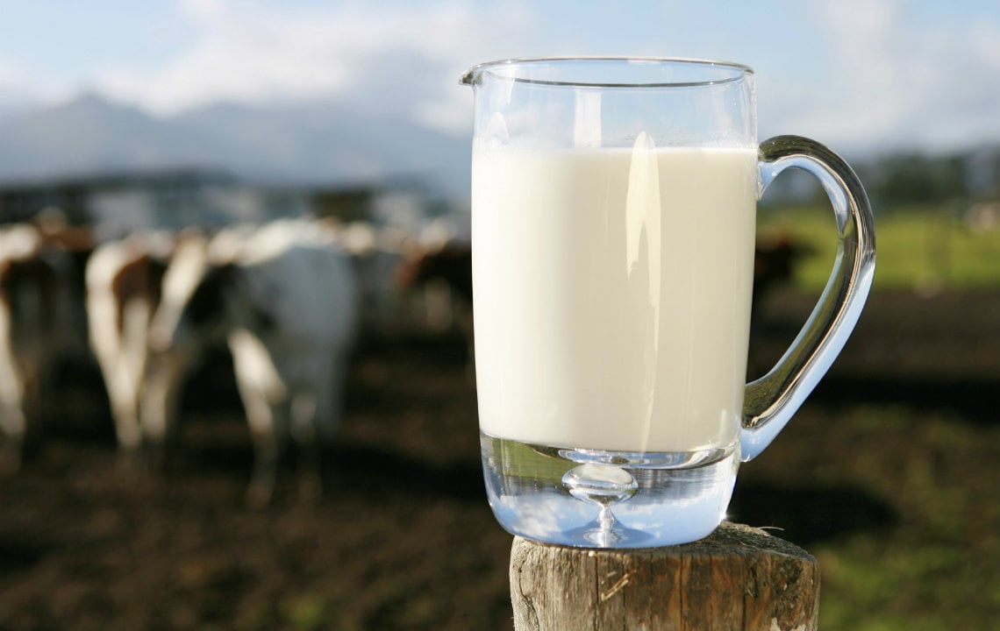
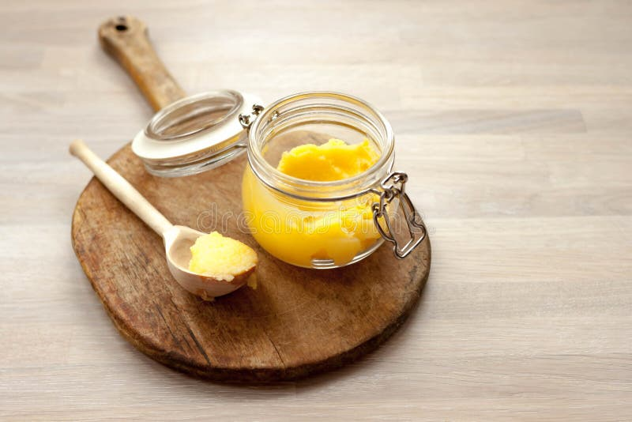
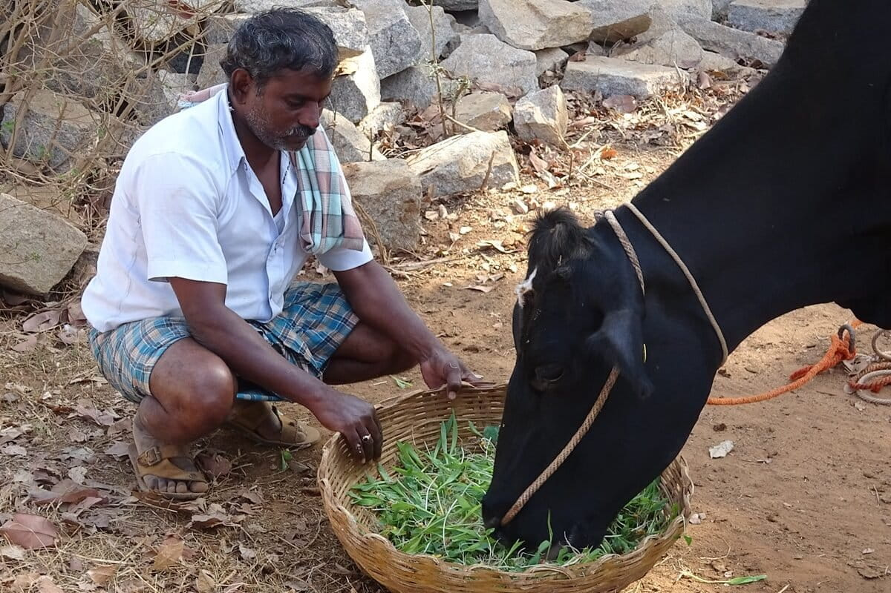

Animals first
Each cow and buffalo has a health record, feed plan, and medication history. They are not machines — they are family.

We grow our fodder. We name our cows.
We track every litre, every day.
Vayumukhi Dairy is a family farm where every animal has a name, every field grows its own feed, and every litre of milk is tracked from shed to customer.
Each cow and buffalo has a health record, feed plan, and medication history. They are not machines — they are family.
We grow Napier grass, seasonal crops, and mineral-rich blends on our own land. What goes in shows in the milk.
Every litre of production, every sale, and every expense is tracked daily so growth is based on facts, not guesses.
Three things, done properly. Milk drawn the same morning. Curd set overnight. Ghee slow-cooked the old way. Each batch carries a date, a fat percentage, and the name of the cow it came from.

Unhomogenised, lightly pasteurised cow milk. Collected twice a day, logged by batch, fat %, route, and customer — bottled the same hour it leaves the cow.
Set overnight from full-cream milk with a heritage culture passed down three generations. Probiotic, scoop-able, and never sour.

Cream is cultured for 12 hours, churned into makhan, then slow-cooked over a low flame until it turns deep amber. Grainy, fragrant, never burnt.
I'm not going to pretend we're a brand. We're a family. My grandfather started this shed with two cows and a brass pot. My father ran it for forty years on memory and notebooks. I came back home from the city to take it forward — with the same cows, the same hands, and a phone in my pocket that finally helps us keep track.
This page isn't a marketing pitch. It's just how we work, written down honestly so you can decide if you want our milk in your kitchen.
Lakshmi is the calm one. Ganga kicks if you milk her on the wrong side. Saraswati waits at the gate every morning because she knows my mother is coming with a piece of jaggery. We don’t put numbers on their ears. We grew up with their grandmothers.
That changes how a farm runs. If a cow is off her feed, we notice the same morning. If her milk drops by half a litre, we catch it in the next session. No animal here is on growth hormones, no animal is pushed past what she’s comfortable giving. They eat well, sleep on dry beds, get bathed twice a day, and the calves stay with their mothers far longer than the textbooks say.

That’s my uncle Ravi, feeding Kamala her morning Napier grass.Two of the four acres behind the shed are fodder. Napier grass through most of the year, hybrid maize in summer, jowar and a few seasonal legumes when the rains come. We cut it fresh every morning — you can smell it from the road. There’s no commercial cattle feed in those bales, no chemical fertiliser on that field. We add the mineral mix ourselves, by hand, measured for each cow depending on whether she’s in early lactation, peak, or dry.
This is the part most dairies don’t want you to look at. We do, because what an animal eats is what you eat one step removed.
My father did this in a black notebook for forty years. Same handwriting, same column headings. I just put a phone next to the notebook so the numbers don’t live and die in one drawer. At 5:30 AM and 5:30 PM, we milk, we weigh, we test the fat — and the page gets photographed into the app right there at the shed.
If the morning numbers look off, I see it on my phone before the route van leaves. If a cow drops in fat percentage three days in a row, the app nudges me to call the vet. The notebook still lives in the drawer. Now it has a memory.
Dr. Subbu has been our vet for sixteen years. He knows our herd better than most doctors know their patients. He comes every quarter for a full check, every month for parasite control, and any time something feels off in between. We don’t wait for a problem to call him.
When an animal does get sick, her milk is pulled out of supply for the full withdrawal period. Not shortened. Not blended. We log the medicine, the dose, and the date she comes back into the tank. I’d rather lose a week of one cow’s milk than send something to your child’s glass that I wouldn’t give my own.
The people running this farm have done it their whole lives. I’m not about to replace them with software. What I did build is a quiet little app that watches in the background — it checks if anyone forgot to log a cow this morning, if a customer hasn’t reordered in a while, if our costs this month are creeping up. Then it sends me a WhatsApp, the way a friend would.
That’s all the “tech” is. No middlemen, no AI farmer, no buzzwords. Just a way to make sure nothing falls through the cracks when there are 28 animals and 180 homes to think about.
There’s no collection agent in the middle. No cold storage warehouse. No “regional processing plant.” The same hands that milk the cow at 5:30 load the bottles into the van by 7. By the time your kettle is on, your bottle is on your doorstep — still cold from the shed, with today’s date and the batch number on the cap.
If anything is ever wrong with a bottle, you call one number. My number. You get me, or my father, or my uncle. Not a call centre, not a chatbot. That’s the whole point of staying small.
If we can’t trace it back to the cow, the day, and the hands that drew it — it doesn’t leave our farm. That’s the only promise we make. Everything else, you can see for yourself.
— The Vayumukhi family
See today’s ledgerThe owner sees everything — sales, costs, animals, reminders, AI alerts. The worker sees only what they need to get the day done.
Full dashboard: milk, animals, sales, costs, customers, reminders, and the AI farm check that runs every morning.
Open Owner Workspace → For the workerSimple, phone-first. Big buttons for Log Milk, Feed, Health, Wash, Scan, and Speak — plus today's reminders.
Open Worker Workspace →